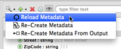

Updating Metadata in an Existing Mapping
|
DataMapper will continue to be fully supported in all current and future versions of Mule 3.x, however it will be removed in Mule 4.0 in favor of the Transform Message component (based on DataWeave code). We recommend that if you wish to take advantage of the new capabilities of DataWeave or if you start new projects, upgrade now. A migration tool is now included in Studio, which assists in converting a DataMapper map to DataWeave. Right click on a DataMapper, select Migrate to DataWeave, and follow the instructions. 
If you don’t see DataMapper on your palette, you can enable it by going to Preferences > Anypoint Studio > Palette Profiles and ticking the checkbox Show deprecated Mule Components and Attributes. |
After you create your data mapping flow, you may need to modify the input or output metadata.
-
In some cases, you may choose to add or remove a field in the input or output mapping, or edit the name and properties of a field. Basic editing of metadata is available in the Input and Output panes of the Graphical Mapping Editor.
-
You may also need to reload metadata from its source after design changes, manually recreate your metadata, your metadata after format changes in an input or output. Anypoint DataMapper provides the Infer Metadata tool for these operations.
Editing Input and Output Metadata Directly
Anypoint DataMapper allows you to modify the metadata definitions for inputs and outputs of the following formats:
-
Structured data: XML, JSON, key-value Map
-
Flat data: CSV or fixed width (not Excel)
Adding a Field
To add a phone field, with the attributes listed below, in the contacts list of the Input pane:
-
Type: Attribute
-
Name: phone
-
Configuration Type: string
Use the following steps:
-
Right-click the parent element to which you want to add the field. In this case, select contacts.
-
Select Add Field.
-
In the New attribute window, click the drop-down menu next to Type, then select Attribute.
-
In the Name input box, type the name of the new field, in this case, phone.
-
In the Configuration section, click the drop-down menu next to Type, then select string.
-
Click OK to add the new field, which appears under contacts.
Use the same procedure to create a corresponding field in the Output pane, then you can create a mapping between the fields as normal.
Editing a Field
Complete the following procedure to edit an existing input or output field.
-
Right-click the field, then select Edit Field from the drop-down menu.
-
In the Edit attribute window, edit the name and type for the field.
Deleting a Field
Complete the following procedure to delete an existing input or output field.
-
If the field you wish to remove maps to any other fields, remove the mapping by selecting the output field, then clicking the red X in the Current Element Mapping pane.
-
Right-click the field you wish to delete, then select Remove Field from the drop-down menu.
-
Click OK to confirm field removal.
Using the Infer Metadata Tool
The Infer Metadata tool (indicated by the wand icon, see image below) is available both for input and output data, accessible in the Input and Output panes of the DataMapper View.

The Infer Metadata tool exposes three actions that modify input or output metadata:
Reload Metadata
This method works with the following input/output formats:
-
XML
-
JSON
-
CSV
-
Fixed-width
-
Excel
When you create a data mapping flow with any of the above formats, you supply DataMapper with sample input or output files, from which metadata is inferred. At any point after having configured DataMapper, you can use the Reload Metadata operation to extract metadata from that same sample file.
To apply this method, complete the following steps:
-
Use your preferred editor to modify the input or output file as needed.
-
Reload the input or output file into DataMapper.
-
Remap any fields as necessary.
See the Adding the Input Field With Reload Metadata of the Using Infer Metadata: Examples for details.
Recreate Metadata
This method allows you to recreate your input or output metadata by loading the metadata from a new input or output file, or by editing the input or output fields already loaded into DataMapper. When you select Recreate Metadata, DataMapper displays the configuration window appropriate for your input or output format.
For example, when recreating metadata for XML input or output, DataMapper displays the Recreate Metadata XML window (shown below). This allows you to upload a modified version or a completely new version of your original XML metadata, without having to rebuild your data mapping flow from scratch.
See the Adding the Output Field With Recreate Metadata of the example for details.
Recreate Metadata From Input Or Output
With this method, DataMapper attempts to infer the input or output metadata from the opposite side of the mapping, and to modify the input or output metadata (whichever you selected) to match the metadata on the opposite side.
For example, if you add, delete or modify fields to the input metadata, you can use this method to that DataMapper automatically infer and insert matching fields in the output metadata. The reverse is also true: if you modify the output metadata, DataMapper can automatically modify the input metadata to match the output.
|
Recreating Metadata with Complex Mappings Use this tool with care if you are working with complex mappings, since even a slight logical error in the fields to match can produce unexpected results. |
|
DataMapper, Connectors and DataSense DataSense-enabled connectors retrieve from the connected source system full metadata for supported operations and objects, including any custom objects and fields. If you model a flow to include a connector as an input to or output from a DataMapper, Mule uses metadata retrieved from the connected systema SaaS provider, for exampleand feeds that data into the DataMapper to automate correct input and output metadata setup. See DataSense and Using Perceptive Flow Design for more details. |
Using Infer Metadata: Examples
This example shows several uses of the Infer Metadata features.
Configuration Employed In These Examples
The following sections illustrate how to add, edit and remove fields in a CSV to XML data map. Though the examples pertain to the CSV input data, the same procedures apply for the XML output data. The DataMapper transformer uses the following configuration:
-
Input: CSV
-
Output: XML
-
Input file:
$PROJECT_HOME/src/test/resources/contacts.csv -
Sample XML output file:
$PROJECT_HOME/src/test/resources/users.xmlClick to see the input CSV file
Click to see the sample output XML file
Click to see the resulting XML output
The image below illustrates the initial DataMapper view.

Adding the Input Field With Reload Metadata
After we configured the data mapping flow (see Configuration Employed In These Examples), we found we needed to add a field in the input file.
-
Locate the input file that you provided for DataMapper, in this case
src/test/resources/contacts.csv, and edit it to add the new field. For this example, add the fieldPhoneat the end of the header, then fill in with information as shown below.
Name,Last Name,Street,ZipCode,Phone
John,Doe,123 Main Street,111,2222-2222
Jane,Doe,345 Main Street,111,3333-3333-
In the Input pane of the DataMapper view, click the Infer Metadata icon, then select Reload Metadata.

The Input pane in the DataMapper will now display the Phone field, as shown below.

|
Mapping Changes after Reloading Metadata Reloading metadata from a modified input or output file may cause DataMapper to delete existing fields. For example, if your configured mapping contains the field |
Adding the Output Field With Recreate Metadata
Complete the following steps to add the new field Phone to your output XML.
-
Locate the output file that you provided for DataMapper, in this case
src/test/resources/user.xml, then edit it to add the new field. For this example, add the elementPhone, as shown below.
<users>
<user>
<name></name>
<lastName></lastName>
<street></street>
<zipCode></zipCode>
<Phone></Phone>
</user>
</users>-
In the Output pane in the DataMapper view, click the Infer Metadata icon, then select Recreate Metadata. The Recreate Metadata XML dialog opens.
image::image049.png[] -
Click Generate schema from xml.
-
Browse to, then select, the sample output XML file, then click OK.
-
Studio asks you to confirm that you wish to overwrite the original XML schema file. Click OK to confirm.
-
Click the Infer Metadata tool, then click Reload Metadata. The output XML includes the new
Phonefield, as shown below.

-
Manually map the input and output
Phonefields. -
A preview of the data mapping flow produces the following output:
<users>
<user>
<name>John</name>
<lastName>Doe</lastName>
<street>123 Main Street</street>
<zipCode>111</zipCode>
<Phone>2222-2222</Phone>
</user>
</users>
<users>
<user>
<name>Jane</name>
<lastName>Doe</lastName>
<street>345 Main Street</street>
<zipCode>111</zipCode>
<Phone>3333-3333</Phone>
</user>
</users>Adding the Output Field With Recreate Metadata from Input/Output
This section shows how to use the Recreate Metadata from Input/Output method to achieve the same result as in the previous section, i.e. add the field Phone to the output XML.
When applied in the output data, Recreate Metadata attempts to modify the output data so that it matches the input data. If, as in this example, you have added a new field in the input data, DataMapper creates a new field with identical name in the output data.
After adding the Phone field in the input CSV, click the Infer Metadata tool in the Output pane, and select Recreate Metadata From Input. DataMapper will automatically create the new Phone field in the output XML, as an attribute with the following parameters:
-
Name:
Phone -
Type:
string -
Namespace:
default
If you delete a field from your input data and then select Recreate Data From Input, DataMapper deletes the corresponding output field, if it exists.
You can recreate the input metadata from the output metadata. In the Input pane, follow the process as outlined immediately above: click Infer Metadata, then select Recreate Data From Output. In this case, DataMapper adds or deletes input fields to adapt the input fields to the output fields.
|
Recreating Metadata in Complex Mappings Use this tool with care if you are working with complex mappings, since even a slight logical error in the fields to match can produce unexpected results. |